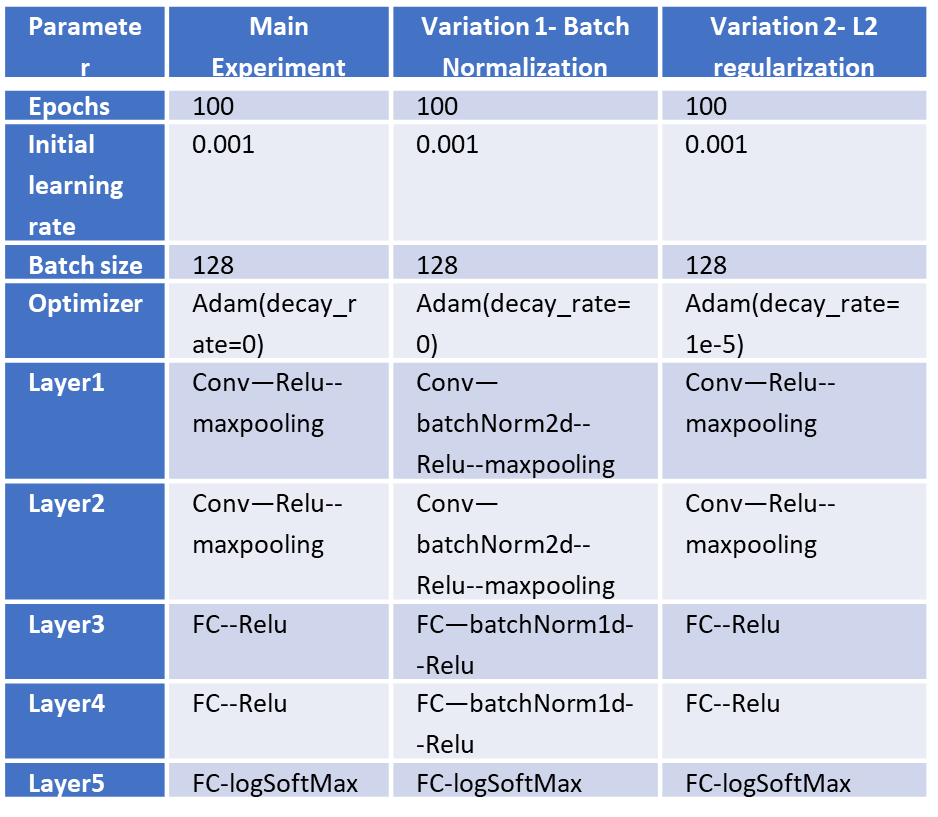
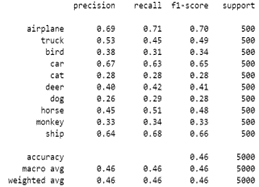

Abstract
This project creates, trains and tests a CNN for the task of image classification. I tried 2 variations in addition to main experiment. These were Batch-Normalization and L-2 Regularization of trainable weights.
Dataset
STL-10 Dataset was used. It consists of 10 mutually exclusive classes with 5,000 training images and 8,000 test images, evenly distributed across the 10 classes. Each image is a 96x96 RGB image. For 800 test images in each category in the STL-10, I used 300 of them to construct the validation set and remaining 500 as test set for my experiment. The data was pre-processed to resize it to 32x32 and normalized to zero mean and unit variance
Architecture
A LeNet-5 style CNN network was constructed with following structure
1) The first layer has six 5x5 convolution filters, stride as 1, each followed by a max-pooling layer of 2x2 with stride as 2.
2) Second convolution layer has sixteen, 5x5 convolution filters, stride as 1, each followed by 2x2 max pooling with stride as 2.
3) Next is a fully connected layer of dimensions 120 followed by another fully connected layer of dimensions 84.
4) Next is a fully connected layer of dimensions 10 that gives unnormalized scores of the 10 classes. All activation units are ReLU.

Results
Attained macro precision score of >45%. It was observed that Batch Normalization speeds up learning. This is because batch normalization overcomes internal covariate shift problem. When network is trained over a batch, it's assumed that input has the same distribution and all weights are updated together. This is a wrong assumption which leads to accumulation of error as we go deeper in the network. This means that training time increases thus increasing the computation cost.

Project information
- Language: Python
- Framework: Pytorch
- IDE: Jupyter Notebook
- Architecture: LeNet-5 (Batch normalization | L2 Regularization)
- Project URL: Image Classification